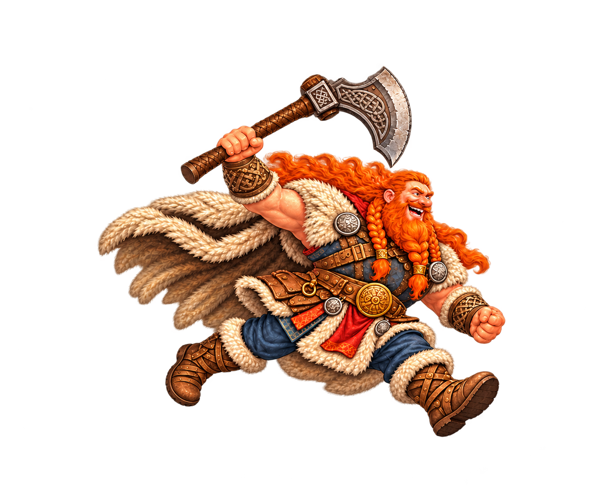
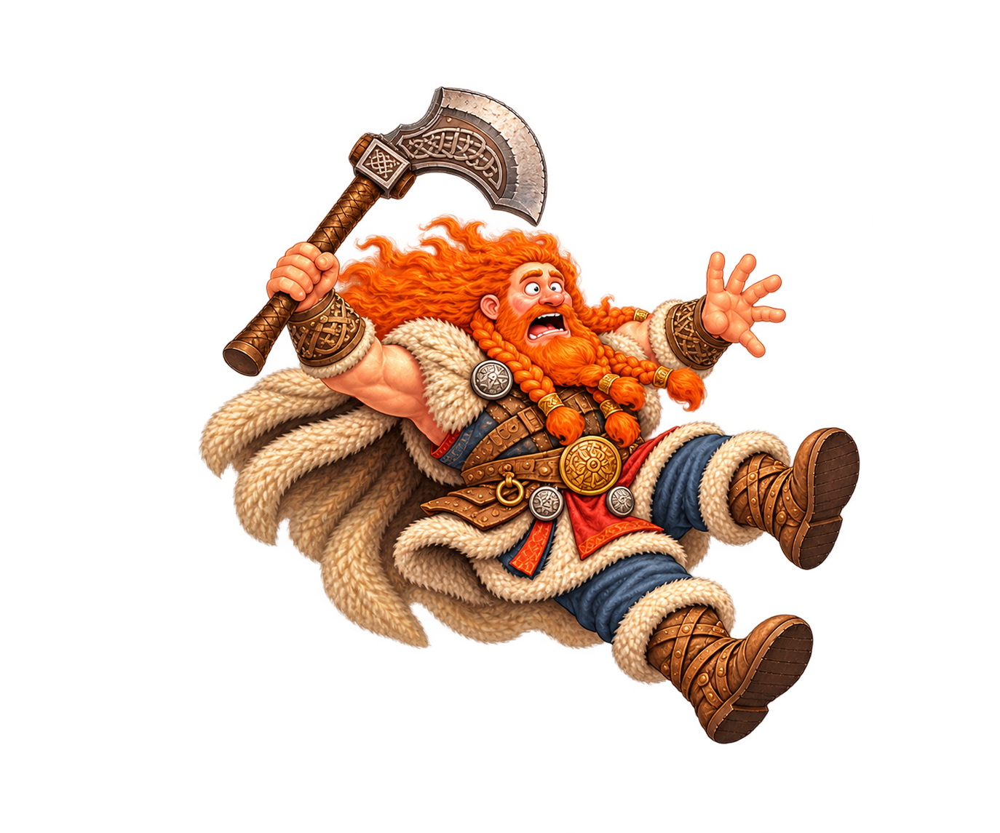
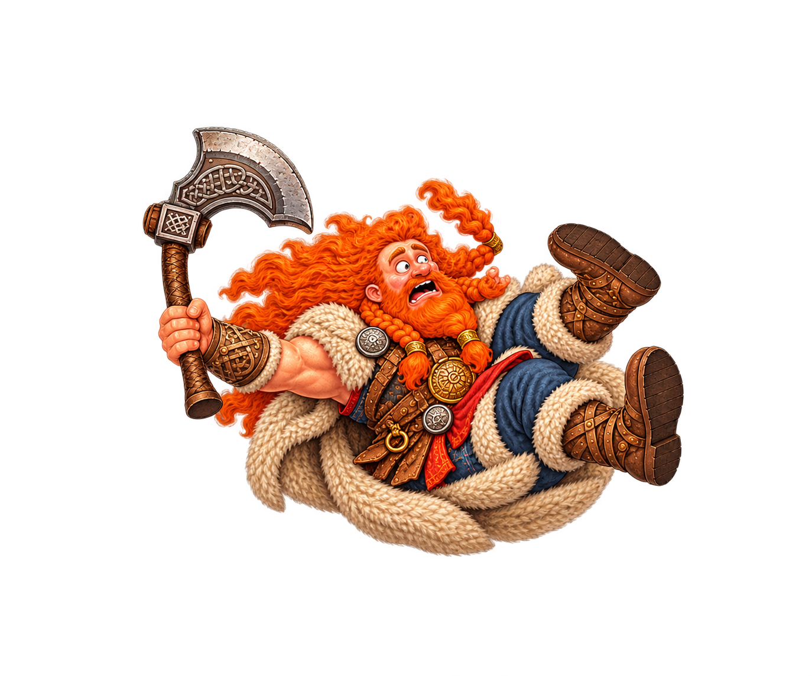
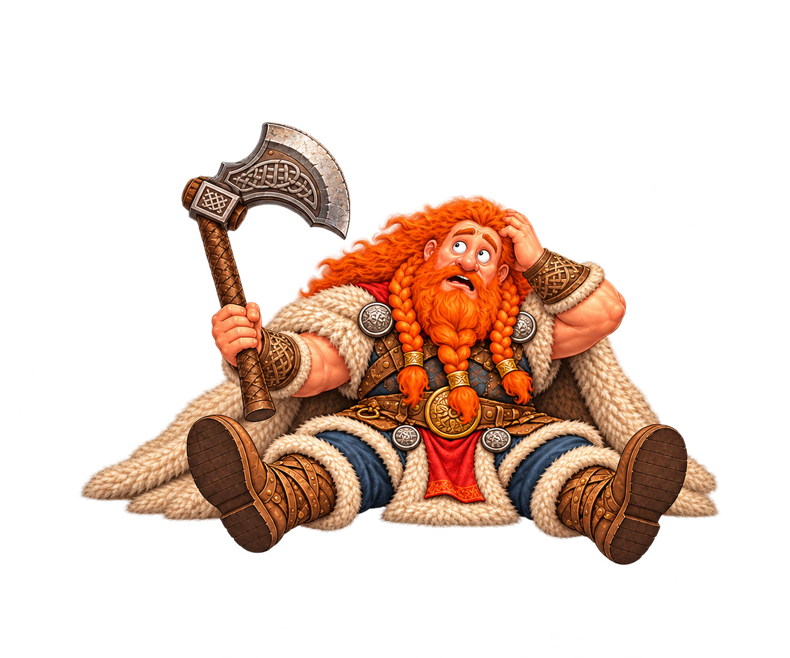
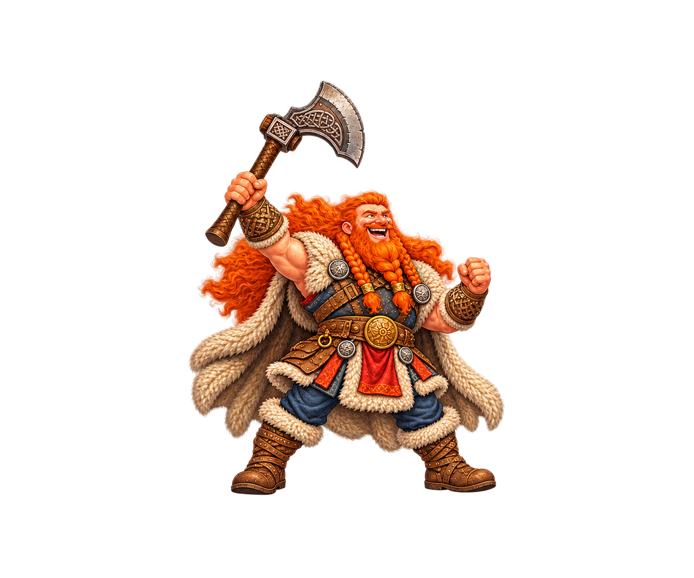
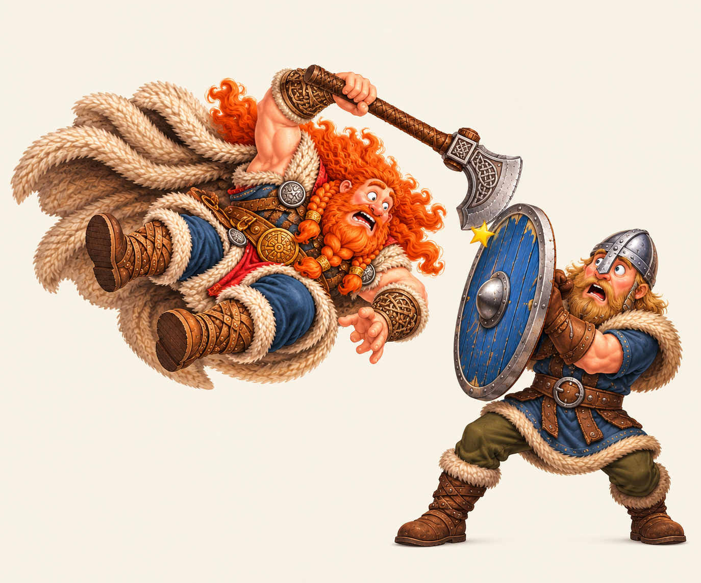
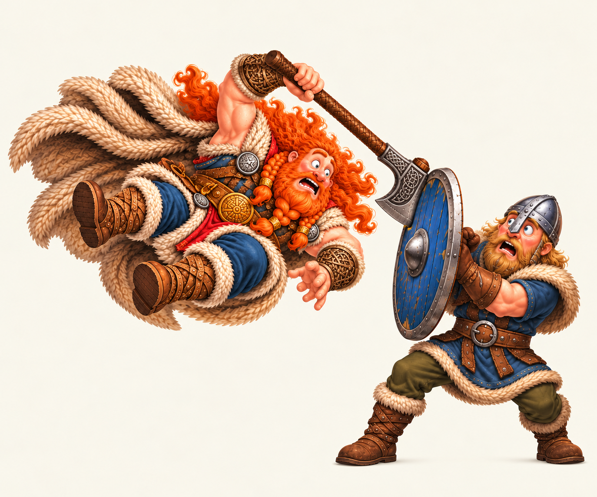
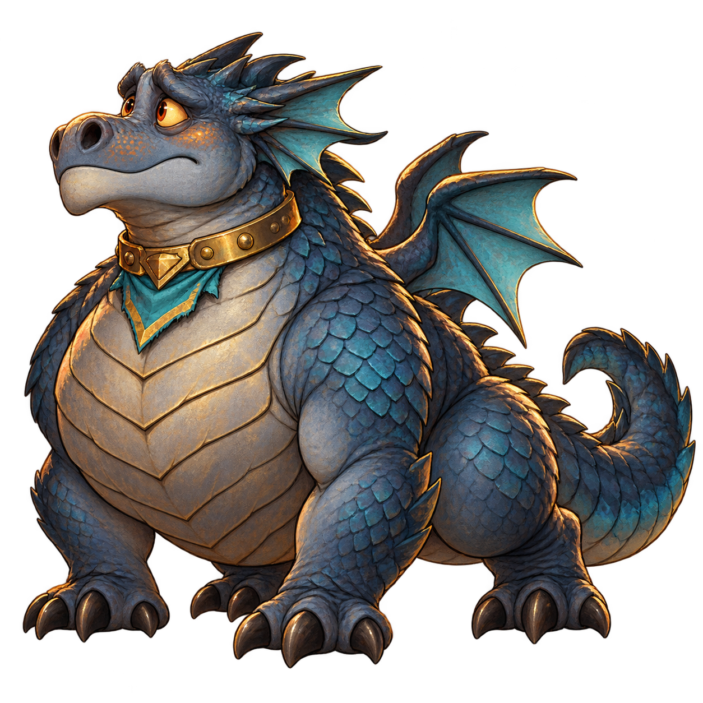
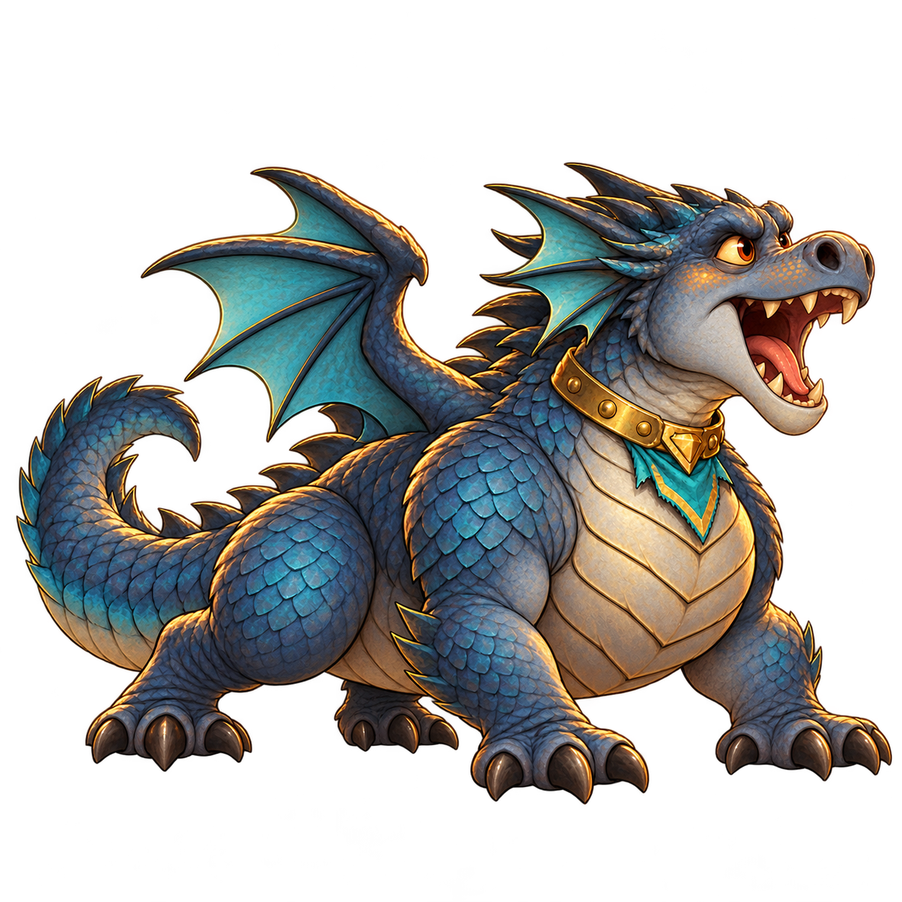

Still images for review only. Light and dark backgrounds show the transparency. Size and placement are illustrative, not gameplay renders.





Two concepts for a gentle shield bump. The star in the first partly covers contact; in the revision the axe overlaps the shield, so the exact point is still ambiguous. Motion and defender reaction remain untested.


Existing defender and revised action pose. The existing image faces left; the candidate faces right.

